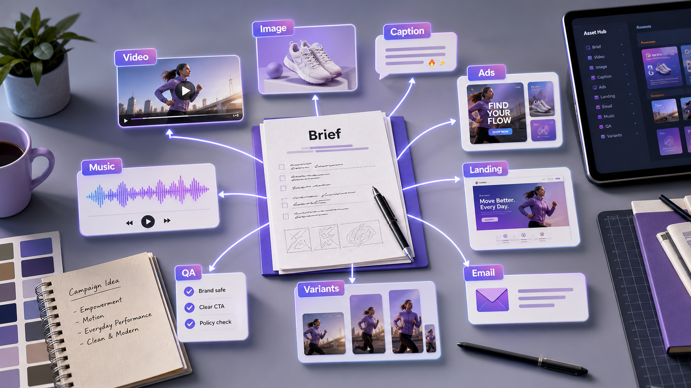

MARKETING CAMPAIGN ASSETS
How to turn one campaign brief into 10 AI marketing assets.
Most teams do not need one more isolated output. They need a connected asset pack: one message expressed as video, image, copy, thumbnail, and paid-social variants. This playbook shows how to build that pack without losing the original brief.

Summary for fast readers
- Start with one clear campaign promise before generating any assets.
- Create a connected pack: video, key visual, thumbnail, captions, ad hooks, landing-page angle, email, music direction, QA, and variants.
- Review the pack side by side so every asset points back to the same audience problem and offer.
WHY THIS WORKS
One brief keeps every asset pointed at the same promise.
When the video, image, caption, and ad all come from the same source brief, the campaign feels more consistent and is easier to review. You can test creative variety without changing the core offer every time.
EXAMPLE BRIEF
Start with a real brief, not a vague prompt.
Product: a lightweight project-management app for solo creators. Audience: creators who feel overwhelmed by scattered ideas. Promise: turn messy notes into a weekly content plan. Channel: TikTok, Reels, landing page, and paid social. Tone: calm, useful, slightly playful.
ASSET PLAN
Create a useful pack, not random outputs.
Hero video concept
A 10-second visual story that shows the pain, product, and payoff.
Product reveal clip
A close-up or screen-style moment that makes the product tangible.
Campaign key visual
A polished image that anchors the look of the campaign.
Thumbnail and cover
A mobile-first visual with readable hook text.
Caption and ad hooks
Short copy variants that test different angles: pain, benefit, proof, urgency.
Music and mood direction
Audio notes that help the video feel native to the channel.
STEP-BY-STEP WORKFLOW
Move from message to publishable assets in one session.
- Lock the core promise. Write one sentence that explains who it helps and what changes for them.
- Generate visual territories. Create two or three image directions before making video.
- Pick one hero direction. Choose the visual route that best communicates the promise in one glance.
- Create video scenes. Generate a hook clip, product moment, and final CTA frame.
- Write copy around the same angle. Produce captions, ad copy, and landing-page hooks that match the visual direction.
- Package and review. Put the video, image, caption, and ad variants side by side before publishing.
PROMPTS TO COPY
Use these as starting points, then add your product details.
Turn this campaign brief into a 10-asset production plan. Include video concepts, image directions, thumbnail text, captions, ad-copy variants, landing-page angle, and music mood. Keep every asset tied to the same core promise.
Create a 10-second launch video concept for [product]. Open with [pain point], show the product as the turning point, end with a clean CTA frame. Include camera direction, lighting, mood, and text-safe composition.
Write 10 social hooks for [audience] who struggle with [pain]. Use the same promise as the video concept. Split them into curiosity, pain-point, benefit, and proof-driven angles.
BAD PROMPT VS BETTER PROMPT
Small prompt changes create more usable assets.
| Weak prompt | Better prompt | Why it works |
|---|---|---|
| Make me marketing assets for my app. | Create a campaign pack for a project-management app for solo creators. Promise: turn scattered ideas into a weekly content plan. Need video hook, key visual, thumbnail text, captions, and ad variants for Reels and paid social. | The better prompt gives audience, product, promise, channel, and asset types. |
| Create a product video. | Create a 10-second product reveal: messy desk opening, app organizes notes into a calendar, calm lighting, final frame with headline space. | It gives a sequence and a final-frame purpose. |
| Write captions. | Write 12 captions matching the video angle: overwhelmed creator becomes organized in one planning session. Include short, useful, and paid-social variants. | It keeps copy tied to the visual asset. |
DELIVERY CHECKLIST
Before you publish, check the asset pack.
Message consistency
Every asset should support the same promise, even if the style varies.
Channel fit
Check whether the video, image, and copy make sense for the intended platform.
CTA clarity
The viewer should know what to do after seeing the asset.
Production readiness
Keep file needs, aspect ratio, text-safe space, and review notes together.
ACTION PLAN
Your 30-minute ChatArt Pro sprint.
- Minutes 0-5: Paste the brief and ask for audience, offer, channel, asset list, and review criteria.
- Minutes 5-15: Generate the first video concept, key visual direction, caption hooks, and ad headlines.
- Minutes 15-25: Choose the strongest direction and create format variants for social, ad, and landing-page use.
- Minutes 25-30: Run the delivery checklist: message consistency, CTA space, platform fit, and commercial review needs.
CONTENT DEPTH
What makes a brief useful enough for AI production.
A strong brief gives the model constraints it can preserve across assets. Include audience, product, offer, proof, must-say phrases, must-avoid claims, channel list, aspect ratios, and the commercial review owner. Without those details, the model may produce attractive assets that are hard to approve.
| Brief field | Why it matters | Example |
|---|---|---|
| Audience | Keeps hooks and visuals specific. | Solo creators planning weekly content. |
| Promise | Prevents message drift across formats. | Turn messy notes into a weekly plan. |
| Proof | Controls what claims can appear in ads. | Use only approved product facts. |
| Channels | Shapes crop, pacing, and CTA placement. | Reels, paid social, landing page. |
FAQ
Common questions.
How many AI assets should one campaign brief produce?
A practical first pack is 8 to 12 assets: one hero video, one key visual, one thumbnail, captions, ad hooks, landing-page copy, email or post variants, music direction, and a QA checklist.
Why is one brief better than separate prompts?
One brief keeps the promise, audience, proof, and tone consistent while still allowing creative variation across channels.
What should teams review before publishing the asset pack?
Review claim accuracy, CTA clarity, visual consistency, platform fit, brand voice, commercial-use rights, and whether the assets still match the original brief.
MAKE IT REAL
Practice in ChatArt Pro and build the first version of your asset pack.
Use the example brief structure above, replace it with your product, and create the first video concept, visual direction, and copy variants while the idea is still fresh.